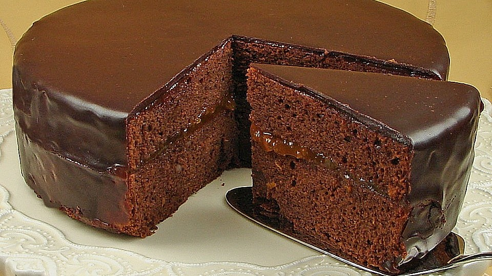

Sacher Torte

Description
Sacher Torte is a traditional austrian chocolate cake.
Very famous and tasty, especially to coffee.
Ingredients
Cake
- 4 ounces semisweet chocolate, chopped
- ½ cup unsalted butter, softened
- ¼ cup confectioners' sugar
- 2 teaspoons confectioners' sugar
- 6 large eggs, separated, divided
- ½ cup white sugar
- 2 tablespoons white sugar
- 1 cup cake flour
Filling
- ¼ cup water
- ¼ cup white sugar
- 3 tablespoons dark rum, divided
- 1 (12 ounce) jar apricot preserves
- 1 tablespoon water
Icing
- 9 ounces semisweet chocolate, chopped
- 3 ounces heavy cream
Steps
Preheat the oven to 350 degrees F (175 degrees C). Lightly grease a 9-inch springform pan.
Line the bottom with a circle of parchment paper; grease the paper.
Make the cake: Melt chocolate in the top of a double boiler over simmering water.
Stir frequently, scraping down the sides with a rubber spatula to avoid scorching,
until chocolate is melted, 3 to 5 minutes.
Remove from the heat and let cool slightly, 5 to 10 minutes.
- Beat butter and 1/4 cup plus 2 teaspoons confectioners' sugar in a large bowl with an electric mixer
until creamy. Mix in melted chocolate, then beat in egg yolks, one at a time.
- Beat egg whites in a glass bowl until foamy. Gradually add 1/2 cup plus 2 tablespoons white sugar,
and continue to beat until stiff, glossy peaks form.
- Fold egg whites into chocolate mixture, then fold in cake flour until incorporated.
Pour batter into the prepared pan and smooth the top.
- Bake in the preheated oven until the edges begin to pull away from the sides of the pan
and a toothpick inserted into the center comes out dry, about 45 minutes.
- Cool pan on a wire rack for 15 minutes, then run a small knife around the edge and
remove the sides of the pan.
Allow cake to cool completely on the pan base, 15 to 20 more minutes.
- While the cake is cooling, make the filling: Bring 1/4 cup water and sugar to a boil in a small saucepan.
Cook and stir until sugar has dissolved and syrup is clear,
2 to 3 minutes. Remove from the heat and stir in 2 tablespoons rum.
- Purée apricot preserves with 1 tablespoon of water in a blender until smooth.
Transfer to a saucepan and bring to a simmer over medium heat; cook until thickened,
about 2 minutes. Stir in remaining 1 tablespoon rum.
- Remove the pan base and parchment paper from cooled cake.
Carefully slice cake in half horizontally into two layers.
Place one layer onto a wire rack; brush 1/3 of the syrup over top,
spread with 1/3 of the apricot purée, then top with remaining cake layer.
Brush the cake top and sides with remaining syrup,
then spread remaining purée over the top and sides.
Refrigerate cake on the wire rack until icing is ready.
- Make the icing: Melt chocolate in the top of a double boiler over simmering water.
Stir frequently, scraping down the sides with a rubber spatula to avoid scorching,
until chocolate is melted, 3 to 5 minutes.
Remove from the heat and let cool slightly.
- While the chocolate is melting, bring the cream to a simmer in a small saucepan.
Stir cream into melted chocolate until combined. Let cool slightly,
stirring often, until icing reaches a spreadable consistency, 5 to 10 minutes.
- Remove the cake from the refrigerator; set the wire rack over waxed paper to catch any drips.
Pour icing over cake and spread over the top and sides,
allow excess icing to drip through the rack. Let sit until icing is at room temperature.
- Carefully transfer cake to a serving platter. Serve at room temperature.